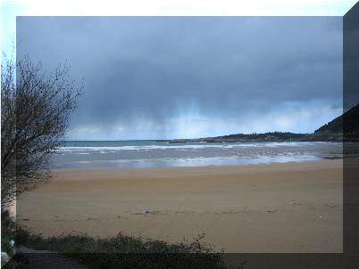
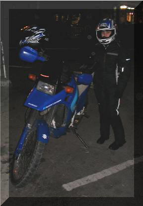
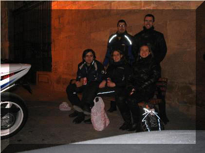

|
Invernal Camturis
- Concentración motera invernal que se realiza en la localidad de Miranda de Ebro, provincia de Burgos; a mediados del mes de Marzo. Como en la mayoría de las invernales, el frío está casi garantizado. A título personal, la concentración está bien, bastantes motos (la gente tiene mono), buen ambiente, organización regular y aunque esta, se realiza en un polígono industrial un poco alejado del pueblo merece la pena acercarse.
|
 |
 |
 |
|
- Partimos de Santander (con unos buenos bocatas) el sábado a medio día con un frío del "carajo" (la semana anterior había caído una buena nevada) y cielo amenazante. Decimos ir por carreteras secundarias y coger unas curvitas mientras hacemos un poco de turismo. Nos entretuvimos demasiado y la noche nos cayó encima, llegando a la concentración después de la prueba de aceleración que se celebró. |
- Quedamos con la gente, nos damos una vuelta por la plaza del pueblo viendo el ambiente y nos comemos los bocatas. El frío empieza a hacer mella en nuestros cuerpos. | |
- Tras los exquisitos bocatas y un cafetito en un bar de la zona (para templar los cuerpos), decidimos volver a Santander por la autopista por miedo a las placas de hielo. Recuerdo dos cosas, en el alto de Altube, a los lados de la carretera unos buenos neveros y tener que parar un par de veces a masajear mis dedos de las manos y pies por la congelación.
Marzo 2.005